Ⅰ
要約
結論
行く価値はある。日程は11月20日（金）〜22日（日）が最有力。ただし勝負は行程ではなく、9月25日（金）12:00ちょうどに予約できるかどうか。先行した長崎・熊本は20〜30分で完売している。
- 推奨日程
- 11/20–22金曜に有給1日。帰った翌日11/23（月）が勤労感謝の日で、丸1日の回復日が残る
- 割引の効き（推定）
- 約10万円交通付パッケージ2泊の場合。4人・総額約25万円が約15万円に
- 予約開始（確定）
- 9/25 12:00楽天トラベル・じゃらん・Yahoo!トラベル・一休.comの4サイト。9月15日に大分県が発表
- 先行県の実績
- 20分長崎は9/15午前10時開始、20分で完売。熊本も20〜30分で売り切れ
結論の根拠（4点）
- 9月は検討対象から外れる。応援割の対象は10月1日宿泊分から。9月に行っても1円も引かれない（大分県公式）。
- 大分は「温泉だけの県」ではない。日本で唯一のホーバークラフト、サルの群れ、ジャングルバスからの餌やり、ケーブルカーで登る遊園地──乗り物と生き物が異様に密集している。長男の「生き物が好き・釣りが好き」、次男の「乗り物が好き」に、偶然とは思えないほど噛み合う。
- 11月でないと成立しないものが2つある。①子どもに釣らせる釣り堀は12〜2月が休業（12月はアウト）。②杉乃井ホテルの水着温泉アクアガーデンは10/1〜11/1が17時開始の短縮営業（10月は日中に遊べない）。この2つが、11月を10月・12月の両方より上に押し上げる。
- 本当の勝負は9月25日12:00の数分間。先に販売を始めた長崎県は9月15日10時開始の20分後に完売、熊本県も20〜30分で売り切れた（朝日新聞・日本経済新聞）。大分県の予算は約10億円。当日は「どの宿にするか」を考える時間はない。事前に宿・日程・サイトを決め切って、12時ちょうどに確定ボタンまで進める状態にしておく必要がある。
9月12日版から変わったこと／まだ分からないこと
解決した：①予約開始日が9月25日（金）12:00に確定。②交通付き旅行商品が対象と大分県公式に明記された。ただしじゃらんパック（航空券＋宿）は対象外で、交通付を取れるのは楽天トラベルの「国内ツアー」ルートに限られる見込み（第Ⅶ章）。
まだ分からない：①2歳の次男が補助対象の「1人」に数えられるか──旅行代金0円の膝上幼児の扱いで割引額が数万円変わる。②1予約あたりの人数・泊数・金額の上限（各サイトのクーポン利用条件は予約開始後に公開される）。③宿・航空券の実売価格は見ていない。④奥様の意向は記憶ベースのまま。
Ⅱ
大分には何があるのか
前提の共有
「大分＝温泉」は合っている。ただしそれは半分で、家族旅行として効いてくるのは別府湾を囲む半径25kmに、乗り物・生き物・温泉・食が密集しているという一点。移動が短く、4歳と2歳を連れても1日に2〜3本の柱が立つ。
(1) 乗り物 ── ここが想定外に強い
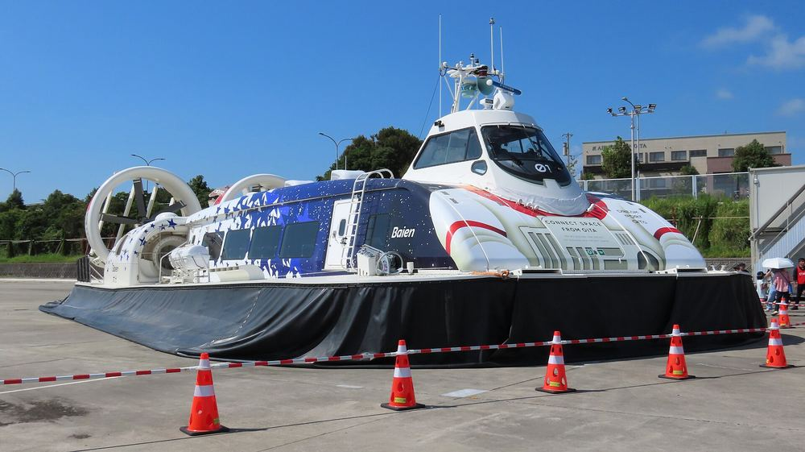
ホーバークラフト（日本唯一）2024年に16年ぶり復活。大分空港から別府湾を時速80kmで横断し、西大分まで35分。世界で英国ワイト島とここだけ。空港に着いた30分後にこれに乗れるのが大分の特異なところ。
© Aixips / CC BY-SA 4.0
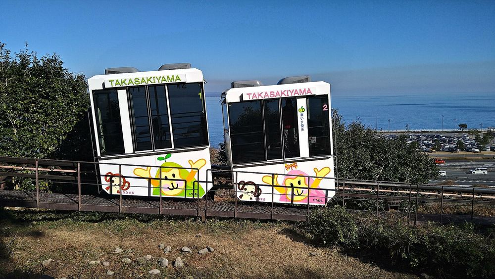
さるっこレール（高崎山）入口からサル寄せ場まで山を登るモノレール。一般160円、小学生未満は無料。登った先に野生のニホンザルの群れがいるので、乗り物と生き物が1本につながる。
© ブルーノ・プラス / CC BY 4.0
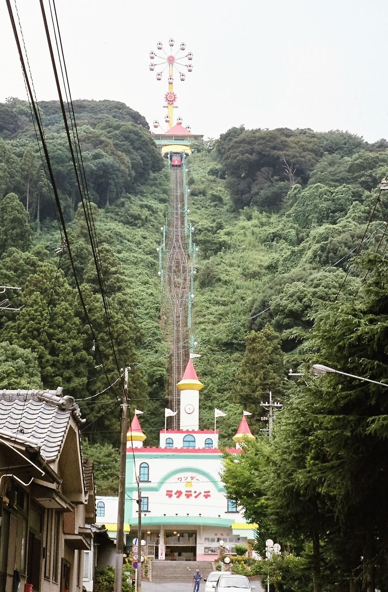
別府ラクテンチのケーブルカー山の上の遊園地へ、入園券にケーブルカー往復が含まれる（大人1,300円／3歳〜小学生600円／2歳以下無料）。園内はゾウの背中に乗る遊具、パンダ・アヒル・くまの空中サイクリング、パトカー、アンパンマン電車と、幼児向けが主戦場。
© Suikotei / CC BY-SA 4.0
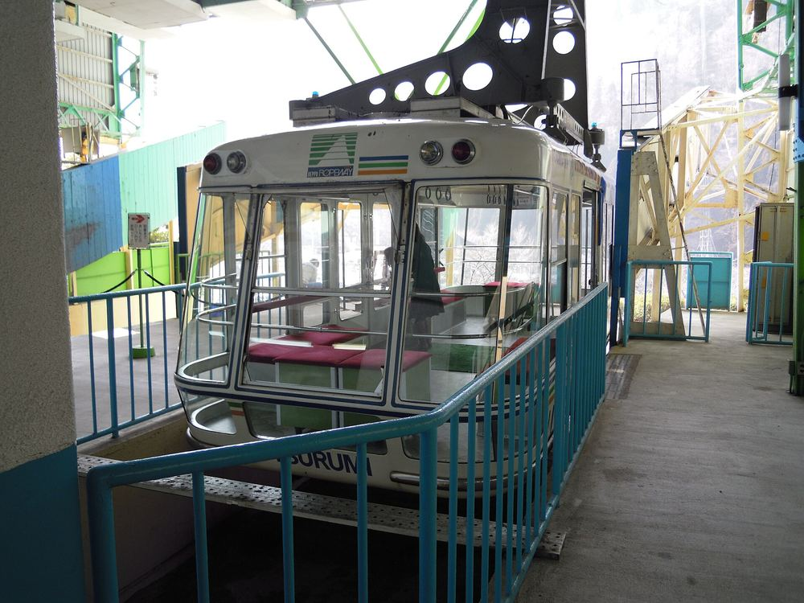
別府ロープウェイ（鶴見岳）九州最大級101人乗りで標高1,375mへ約10分。往復 大人1,800円／4歳〜小学生900円。11月15日から冬季ダイヤに切り替わり上り最終が16:30に繰り上がる。
© Zero_1_k / CC BY-SA 3.0
このほかに由布院の観光辻馬車（本物の馬が引く、約60分・大人2,500円／4歳〜小学生1,800円・4歳未満は膝の上）がある。ケアンズで「動く・触れる・乗れる」が刺さり、「座って説明を聞く」が退屈だった長男の傾向に、大分の主要コンテンツはほぼ全部が前者側に寄っている。
(2) 生き物 ── ケアンズのカンガルー餌やりの再現ができる
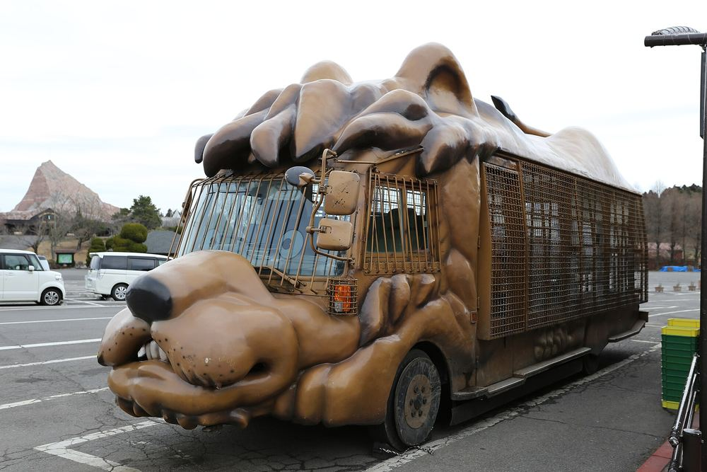
九州自然動物公園アフリカンサファリ（宇佐市）ジャングルバスの窓からライオン・キリン・ゾウに直接餌をやる。大人3,500円／4歳〜中学生2,300円（入園料別）。JR別府駅からバス50分。ケアンズで最大のヒットだったカンガルー餌やりと、体験の構造が同じ。
© Gordon Cheung from Hong Kong / CC BY 2.0
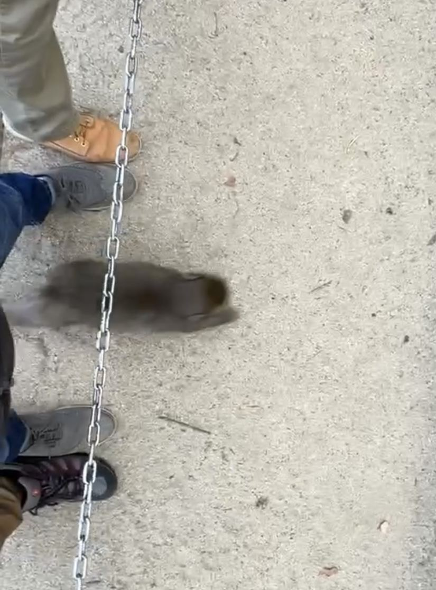
高崎山自然動物園野生のニホンザル約1,000頭が群れで山から下りてくる。柵がなく、サルが足元を走り抜ける。入園 一般500円・小学生未満無料。向かいが水族館うみたまご。
© Bpcon98 / CC0
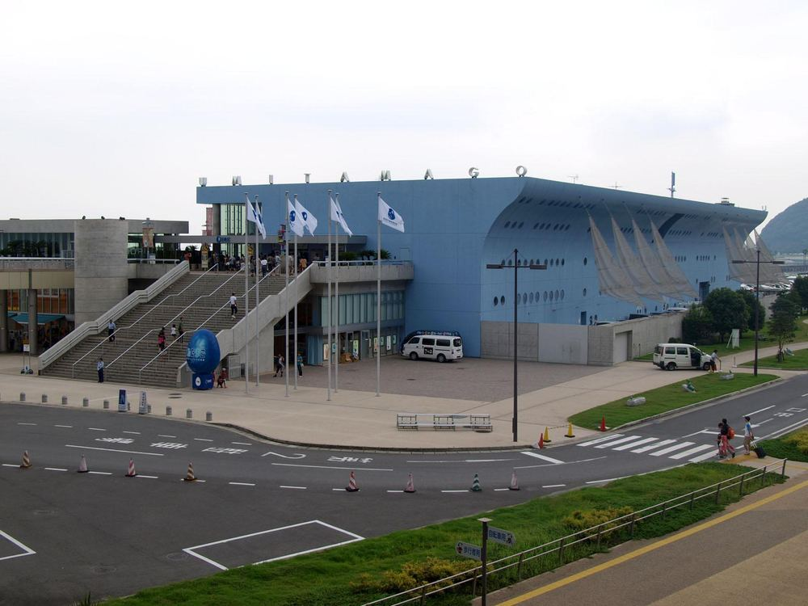
うみたまご（大分マリーンパレス水族館）別府湾に溶け込む屋外タッチプールが3種類（小さなサメ・エイに触れる魚プール、波を再現した大タッチプール）。ひと通りで約1.5時間、ショーと ふれあい込みで3時間、子連れなら4〜5時間。
© 大分帰省中 / CC BY-SA 3.0
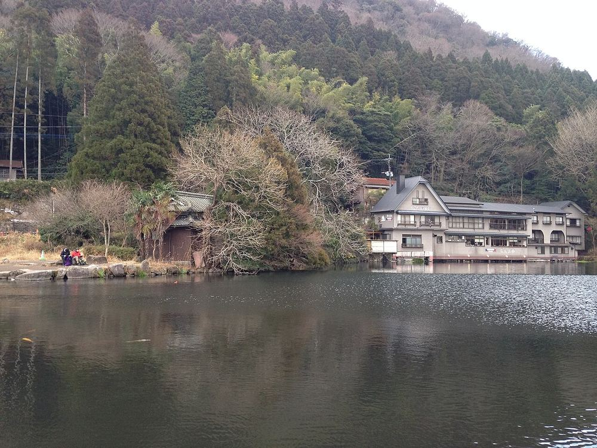
釣り堀フィッシングゆふ（由布市湯布院町）手ぶらで行け、ヤマメ・ニジマス・テナガエビが1匹500円。釣った魚は受付に持っていくと20分ほどで焼き上がる。ケアンズで4セッション釣果ゼロだった件の、最短の回収先。写真は近くの金鱗湖。
Lake Kinrinko © そらみみ / CC BY-SA 4.0
(3) 温泉とサウナ ── 「大浴場だけでは物足りない」への答え
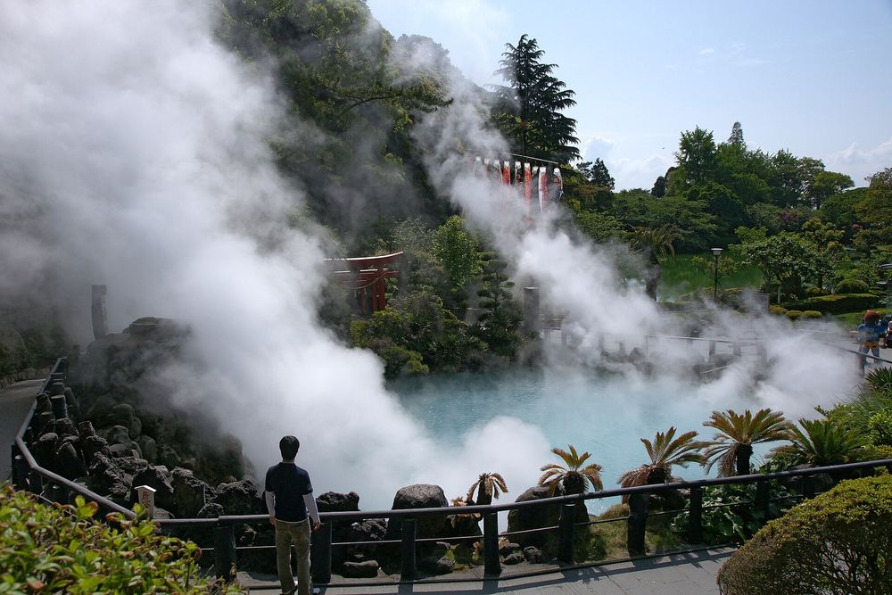
海地獄コバルトブルーの熱湯池。共通観覧券は大人2,400円／小中学生1,200円。無料の足湯があり、手すり付きで子どもも入れる。
© 663highland / CC BY 2.5
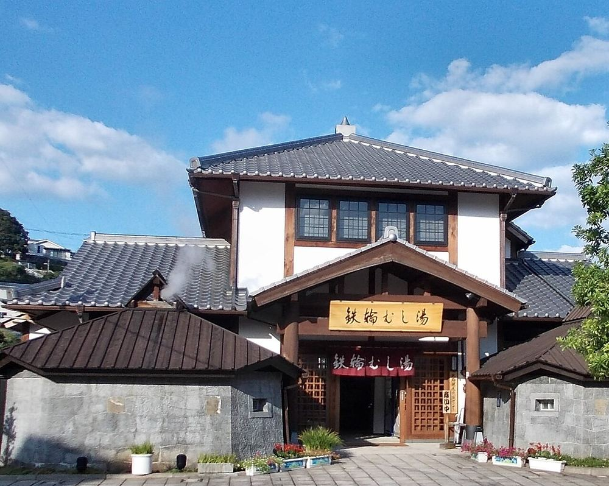
鉄輪の蒸し湯・地獄蒸し石菖を敷いた石室に横たわる鎌倉期からの蒸し風呂。ひょうたん温泉には55℃の天然蒸し湯と、竹製冷却装置「湯雨竹」を通した源泉かけ流しの水風呂がある。
© STA3816 / CC BY-SA 3.0
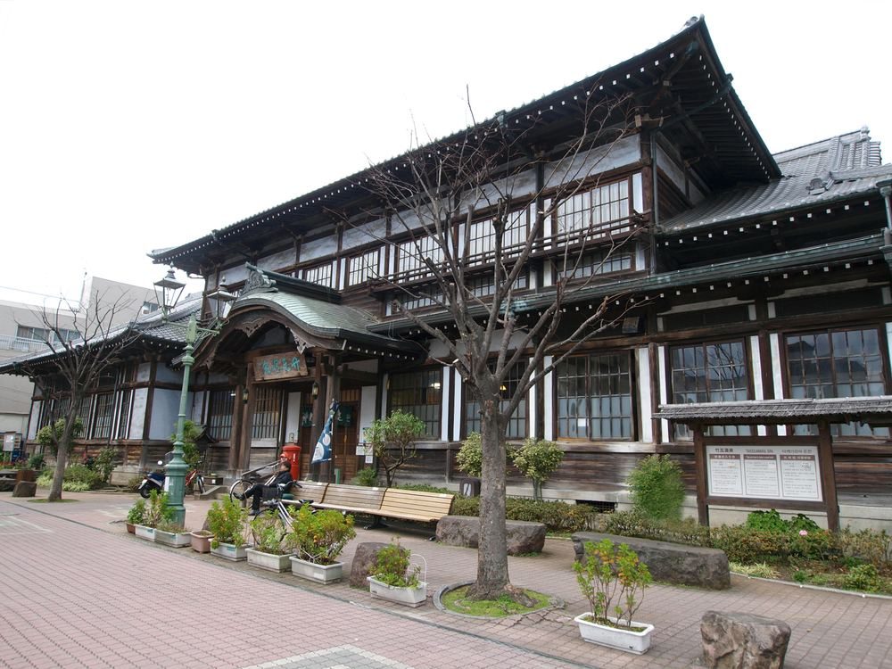
竹瓦温泉の砂湯明治12年創業。浴衣を着て横たわり、熱い砂をかけてもらう。別府には海浜砂湯もある。
© 大分帰省中 / CC BY 3.0
杉乃井ホテル「棚湯」── ビジネスホテル不満の裏返しとして
棚田状に段が連なる大展望露天風呂。2023年7月リニューアルで、別府の市街地から別府湾まで見渡せる。ロウリュウサウナを含む複数の温浴スタイルが併設。「大浴場だけでは物足りない、外気を積極的に取り込める露天が欲しい」という条件に対しては、大分県内でここが最も直球の答えになる。
加えて水着で家族全員一緒に入れる屋外温泉プール「ザ アクアガーデン」（通年営業・37〜39℃・宿泊者無料・水遊びパンツで乳幼児も可・噴水ショー19:30〜）がある。父が1人でサウナに行っている間、母子3人が待つのではなく遊べる、という構造が作れる。
(4) 食事 ── 「勝手に美味しいイメージ」は概ね当たり
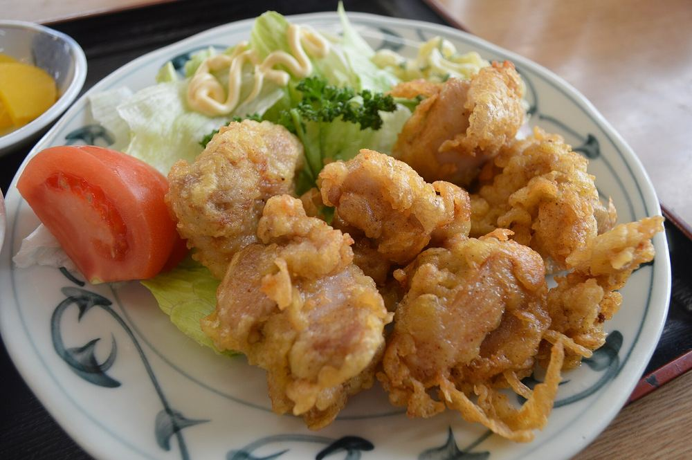
とり天鶏の天ぷらにポン酢と辛子。発祥は別府のレストラン東洋軒（大正15年創業、「鶏ノカマボコノ天麩羅」として登場）。揚げ物なので幼児2人が確実に食べるのが実務的に大きい。
© Asturio Cantabrio / CC BY-SA 4.0
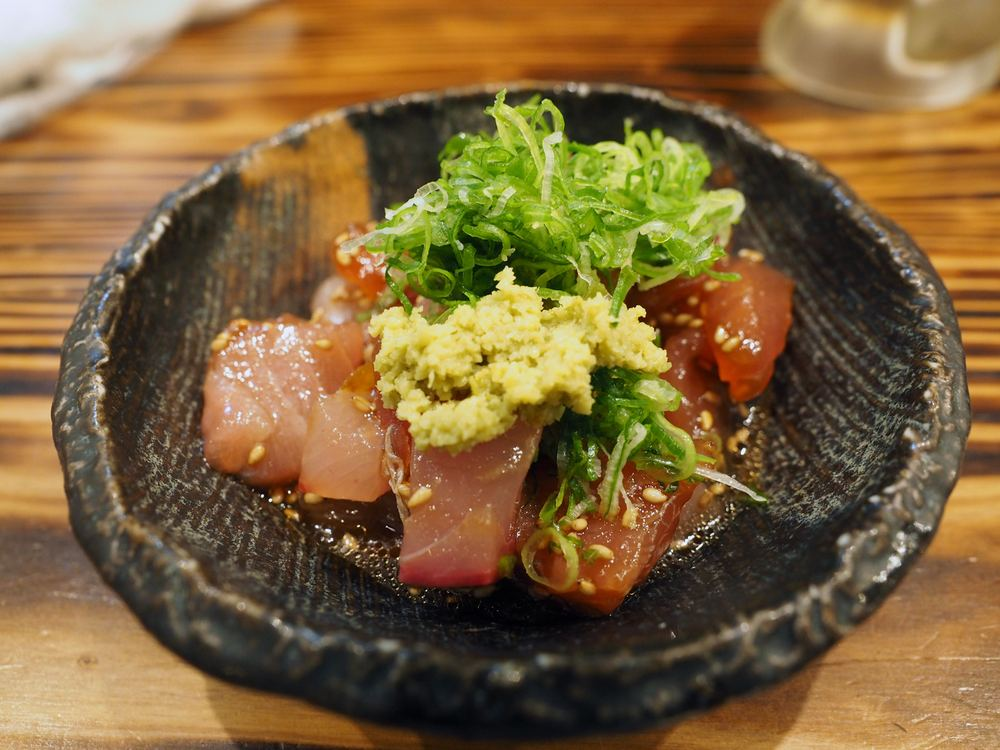
りゅうきゅうアジ・ブリなどの刺身を醤油・ごま・生姜のたれで和えた郷土料理。丼にもできる。関あじ・関さばと並ぶ大分の海側の柱。
© 大分帰省中 / CC BY-SA 4.0
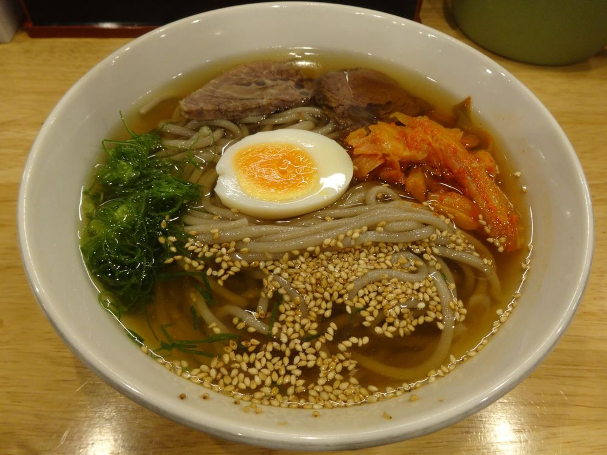
別府冷麺別府独自に発展した冷麺。ほかにだんご汁（平打ち団子の味噌汁／幼児が食べやすい）、地獄蒸し（鉄輪で食材を温泉蒸気で自分で蒸す・体験型）。
© 聖石大戦ぶぅぶぅ / CC BY-SA 4.0
Ⅲ
復興割はいつまでで、いくら効くか
制度
(1) 残された時間
大分県の予算は約10億円（九州7県合計 約151億円の約7％）。先行した長崎県は9月15日10時の予約開始から20分で完売し、熊本県も20〜30分で売り切れた。「12月25日まである」は実質的な期限ではない。実質的な期限は9月25日12時の数分間。
(2) 制度の中身
まだ未確認：子ども・幼児の人数カウント。旅行会社（ニーズツアー）のFAQは「旅行代金の有無にかかわらず0歳児から対象」と案内しているが、これは事業者の説明であって大分県の要項原文では確認できていない。膝上無料の次男（2歳）が1人として数えられるかで、上限が12万円と9万円の間で動く。各サイトの「クーポンの利用条件」は予約開始と同時に公開されるので、9/25の12時直前に読む。
(3) 販売チャネル別の開始日
Ⅳ
いつ行くか
9月／10月／11月／12月
(1) 月ごとの判定
(2) 11月のどの週末か
11/20–22を推す理由をひとつに絞ると
2歳7か月を連れた飛行機2泊3日は、帰った翌日が一番きつい。11/20発なら、帰宅した翌日の11/23が勤労感謝の日で、家族全員が家にいられる。この構造を持っている週末は11月に他になく、価格差を払う価値がある、というのが判断。
価格が想定を超えて折り合わなければ、11/13–15に逃げるのが次善。この2案は同時に検討して、受付開始日に取れたほうを採る形にしておくのが現実的。
Ⅴ
どう動くか
地図と交通
(1) 別府湾まわりの位置関係
ホーバークラフト（日本唯一）
空港連絡バス エアライナー
路線バス・JR
読み取ってほしいのは一点。大分空港は別府から見て湾の反対側（国東半島）にあり、陸路だと湾をぐるっと回って約50分かかる。ところがホーバークラフトは湾をまっすぐ横断して35分で、しかも到着地の西大分から高崎山・うみたまごまでは目と鼻の先。「移動そのものが最初のアトラクションになり、かつ最短」という珍しい構図が成立している。
(2) 別府市内
別府は「海沿いの駅 → 山手に宿 → さらに山の上に鉄輪の地獄」という単純な縦の構造。宿を杉乃井に置くと、地獄めぐり（バス25分）、ラクテンチ（すぐ隣の山）、高崎山・うみたまご（バス20分）がすべて片道30分圏に入る。2泊とも同じ宿に置けるので、幼児2人を連れての荷造りが1回で済む。
(3) 便とバスの実数
接続の要（ここが今回いちばん気持ちのいい発見）
羽田07:55発 → 大分09:30着 → ホーバークラフト10:15発 → 西大分10:50着。乗り継ぎに45分の余裕があり、幼児2人でも慌てずに済む。日本で唯一のホーバークラフトに、旅の開始30分後に乗れる。
帰りは西大分まで戻らず、別府駅からエアライナーで空港へ直行（約50分）するのが自然。行きは船・帰りはバスで、往復の景色も変わる。
要確認：11月のホーバークラフト運航ダイヤ（現在公表されているのは10月15日まで）と、11月の航空便ダイヤ。ホーバーは波・風による欠航があるため、欠航時はエアライナーに切り替える前提で組むこと。予約はLINE公式・専用アプリから利用日の30日前より。
Ⅵ
2泊3日の行程案
11/20（金）–22（日）
杉乃井ホテルに2泊固定、荷造りは1回。就寝21〜22時を崩さないことを制約条件として組んだ。2日目だけ中身の選択肢が3つある。
DAY 1
11月20日（金）── 船で入り、海の生き物と猿
有給1日／移動3.5h
05:45
自宅（木場5-8-41）発全員
幼児2人＋荷物なので、この日だけはタクシーを推奨。電車なら木場→日本橋→浅草線直通で羽田第1・第2へ、約40分。
タクシー 約7,000円／電車 4人 約2,000円06:40
羽田空港着・搭乗手続き
2歳の次男は膝上で座席なし（国内線は3歳未満無料）。
07:55
ANA791 羽田 → 大分長男・次男
09:30着。1時間35分で、幼児が保つ範囲。
10:15
ホーバークラフトで別府湾を横断長男・次男
大分空港10:15発 → 西大分10:50着。日本唯一・時速80km。ベビーカー持ち込み可。旅の1本目の柱をここに置くのが今回の設計。欠航時はエアライナーで別府へ直行に切り替え。
アプリ決済 大人2,000×2＋小児1,000＝5,000円（次男は無料）11:00
西大分 → 高崎山・うみたまご
海岸沿いを北へ。バスまたはタクシーで10分程度。
11:30
うみたまご（昼食含む）長男
屋外タッチプールでサメ・エイに触る。セイウチ・イルカのパフォーマンス。館内に食事あり。
大人約2,600円×2（WEBチケットで最大150円引き）／幼児の料金区分は要確認14:30
高崎山自然動物園長男
「さるっこレール」で山を登り、野生のニホンザル約1,000頭の群れへ。柵なしで足元を走り抜ける。2歳の次男は抱っこ推奨（サルに触らない・目を合わせない・食べ物を持たないの3点は現地で必ず確認）。
入園 一般500円×2＝1,000円／さるっこレール 160円×2＝320円。小学生未満は入園・レールとも無料16:00
バスで別府へ（約20分）→ 杉乃井ホテル チェックイン
17:00
棚湯 ＋ ロウリュウサウナ本人
棚田状の大展望露天から別府湾。この時間帯に単独で入るのが現実的。その間、母子3人はアクアガーデン（水着・37〜39℃・通年営業）で待たずに遊べる。
宿泊者は無料18:30
夕食（ホテルビュッフェ）
とり天・だんご汁・りゅうきゅうは館内ビュッフェでも出ることが多い。要確認。
19:30
アクアガーデンの噴水ショー（約10分）次男
19:30／20:00／20:45／21:30の4回。最初の回に行って21時前に部屋へ戻るのが就寝時間を守る唯一のやり方。
DAY 2
11月21日（土）── ここだけ3案から選ぶ
選択日
09:00
ここから3案（下の比較表で選ぶ）
①別府に留まる／②湯布院へ出る／③アフリカンサファリへ出る。どれを選んでも夕方には杉乃井に戻り、棚湯 → 夕食 → 21時就寝の型は同じ。
推奨は②。理由は、引き継ぎ資料に明示された「子どもたちに魚を釣る成功体験をさせたい」という意向に、大分で唯一きれいに応えられるのが釣り堀フィッシングゆふで、しかも12月に入ると休業するから。管理釣り堀なので、ケアンズのような釣果ゼロにはならない。辻馬車が取れなければ金鱗湖の散策に振り替えればよく、②は失敗しても致命傷にならない。
DAY 3
11月22日（日）── 最後に乗り物を1本置いて帰る
移動3.5h／翌日は祝日
10:30
別府ラクテンチ次男長男
ケーブルカーで山上へ。ゾウの背中、パンダ・アヒル・くまの空中サイクリング、パトカー、アンパンマン電車。4歳と2歳の両方が同じ場所で成立する数少ない施設。2日目に①を選んだ場合は、ここを別府ロープウェイ（鶴見岳・往復大人1,800円）に差し替える。
入園＋ケーブルカー往復 大人1,300円×2＋小人600円＝3,200円（2歳以下無料）。のりもの券は別途400円／枚13:00
昼食 ── レストラン東洋軒でとり天
大正15年創業、とり天発祥の店。揚げ物なので幼児2人が確実に食べる。
15:00
別府駅 → エアライナーで大分空港（約50分）
ホテルで荷物を受け取ってから乗車。
約1,600円×2＋小児16:50
ANA2496 大分 → 羽田
18:35着。空港から自宅まで約1時間で、20時前後の帰宅。22時就寝の制約を崩さない。
20:00
帰宅 ── 翌11月23日（月）は勤労感謝の日
洗濯・片付け・体調回復・保育園の準備に丸1日使える。この日程を推す最大の理由がここ。
Ⅶ
いくらかかるか
推定・4人2泊
この章の数字はすべて推定です
実際の宿泊料金・航空券価格は確認していません。杉乃井ホテルの11月の4人1室料金も、応援割対象プランの有無も未確認。下の表は「桁と構造」を見るためのもので、予約時の実額とは必ずずれます。
(1) 予約のかたちで割引額が変わる
設計上の結論：交通付パッケージ・2泊以上が最も有利。1泊にすると1人あたりの器が3万円から2万円に縮み、2泊との差額（宿1泊ぶん約6万円）に対して割引の伸びが3万円しかない。「2泊3日にする」という今回のご判断は、制度設計上も正しい。
(2) どのサイトで取るか ── ここで割引額が5万円変わる
交通付きは「対象」だが、サイトによって扱いが違う
大分県の公式ページは交通付き旅行商品を対象と明記している。ところがじゃらんnetは「じゃらんパック（JAL航空パック・ANA航空パック）」を対象外としており、楽天トラベルは「国内ツアー」（航空券＋宿）を対象、「JR新幹線・特急＋宿」を対象外としている。つまり交通付2泊以上の上限3万円を取りにいけるのは、実質的に楽天トラベルの国内ツアーだけという状況。
この判断の含意：9月25日までに航空券を買わないこと。先に航空券を押さえてしまうと、交通付パッケージという一番有利な取り方が使えなくなる。11/20–22の便は2か月前なので、9/25時点でまだ席はある想定。
(3) 総額のイメージ
「リーズナブルな旅行をする価値があるか」への答え
差はおよそ10万円。これは4人家族の国内2泊3日としては、同じ内容を通常期にやるより4割安く済むという意味になる。
ただし注意が1つ。応援割は旅行代金が高いほど絶対額が増える（上限まで）ので、「割引があるから普段より良い宿にする」という判断は制度と噛み合っている一方、1人1泊4万円を超える宿では上限に当たって実質割引率が下がる。1人1.5〜2万円クラスの宿がもっとも効率がよく、杉乃井ホテルはちょうどその帯に入る想定。
Ⅷ
家族4人それぞれに何が残るか
適合の検証
和希 4歳10か月
- 釣り堀フィッシングゆふ──管理釣り場なので、ケアンズの釣果ゼロは繰り返さない。釣った魚をその場で焼いて食べるところまで完結する
- 高崎山──野生のサルの群れが足元を走り抜ける。柵越しではない
- うみたまごのタッチプール──サメ・エイに手で触れる
- アフリカンサファリ（案③）──バスの窓から直接餌をやる。ケアンズのカンガルーと同型の体験
注意：座って説明を聞く形式は退屈だったという実績あり。イルカショーなど「見るだけ」の時間は長く取らない。
浩希 2歳7か月
- ホーバークラフト──ふわりと浮いて走る船。3歳未満は運賃無料
- さるっこレール──山を登るモノレール。小学生未満無料
- ラクテンチのケーブルカーと幼児向け乗り物（2歳以下入園無料。パトカー、アンパンマン電車の実績あり）
- アクアガーデン──水遊びパンツで入れる37〜39℃の温泉プール
注意：地獄めぐりは熱湯・蒸気の設備が多く、常時手を離せない。3か所に絞る前提。
浩和 本人
- 杉乃井ホテル「棚湯」──棚田状の大展望露天から別府湾。「大浴場だけでは物足りない／外気を取り込める露天が欲しい」への直球の答え
- ロウリュウサウナが併設。棚湯でととのう動線が宿の中で完結する
- ひょうたん温泉（別府駅からバス25分）──55℃の天然蒸し湯＋「湯雨竹」を通した源泉かけ流しの水風呂。2日目の①案に組み込める
- とり天・りゅうきゅう・地獄蒸し
注意：サウナの単独行動は、母子3人がアクアガーデンで遊べる17:00〜18:30の枠に寄せる。
YUKI 妻
- 棚湯・アクアガーデン（水着なので子ども2人と一緒に入れる）
- 湯布院の湯の坪街道・金鱗湖（案②の午後）──11月下旬から紅葉の見頃
- ホテル内で完結する時間が長いので、移動の負担が小さい
前提が弱い：「大分に行きたいと言っていた気がする」は記憶ベースで、意向として確認できていない。この資料を見せる前に、行き先そのものの合意を取ること。
Ⅸ
次にやること
9月中
残り3日。9月25日（金）12:00がすべて
長崎県は9月15日10時開始の20分後に完売、熊本県も20〜30分で売り切れた。大分県も同じ展開になる前提で動く。当日に宿を探し始めたら間に合わない。
- 今日 9/22奥様に「大分でいいか」と「11/20の休暇が取れるか」を確認するこの2つが決まらないと9/25に動けない。行き先の合意が未確認のまま予約日を迎えるのが最悪の形。秩父から帰ったばかりのタイミングで恐縮ですが、ここだけは今日中に。
- 今日 9/2211/20（金）の有給と、保育園・療育の欠席連絡の段取りを確定取れないなら第2希望を11/13–15に、それも難しければ11/21–23（有給ゼロ）に切り替える。9/25の朝までに第1・第2希望を決め切る。
- 9/23–24楽天トラベルとじゃらんにログインし、カード情報を登録しておく当日のパスワード再発行・カード入力で数分を失うと終わる。2サイトとも「あとは確定を押すだけ」の状態にする。
- 9/23–24杉乃井ホテルの4人1室プランを特定し、URLを控える第1候補・第2候補まで。楽天トラベルは「国内ツアー」（航空券＋宿）、じゃらんは「宿泊のみ」で別々に用意しておく。4歳・2歳の子ども料金区分（こどもC／こどもD）の指定方法も事前に確認。
- 9/24 12:00福岡県の開始を観察する（本番前のリハーサル）福岡県・佐賀県は9月24日（木）12時ごろに、大分の1日前に販売が始まる。どのくらいの速さで枠が消えるか、各OTAの画面でクーポンがどう出るか、楽天トラベルの「国内ツアー」が実際に選べるかを見ておけば、翌日の動きが変わる。買う必要はない。見るだけ。
- 9/25 11:50PCとスマホの2台で、楽天トラベルとじゃらんを同時に開いて待機1台が詰まっても、もう1台で取りにいける。直前に各サイトの「クーポンの利用条件」を読む──1予約あたりの人数・泊数・金額の上限はこのタイミングで初めて公開される。
- 9/25 12:00楽天トラベルの国内ツアー（航空券＋杉乃井2泊）を最優先で確定交通付2泊以上＝1人3万円の器は、4サイトでここにしかない。取れなければ即座にじゃらんの宿泊のみに切り替え、航空券はその後に別途手配。
- 予約後すぐホーバークラフトの11月ダイヤを確認し、30日前に予約LINE公式または専用アプリから利用日の30日前に受付開始。11/20発なら10月21日が予約解禁日。
- 予約後2日目を①②③のどれにするか決める②（湯布院）を選ぶなら、辻馬車は当日9時に現地窓口で先着順なので、朝いちで由布院に着く動線に組み替える必要がある。
- 決定後しおりを本文化するこのHTMLを、開園時間・バス時刻・緊急連絡先まで入った「見れば完結する」しおりに書き換える。
まだ分かっていないこと
- 2歳児の人数カウント──割引額が数万円変わる。各サイトのクーポン利用条件（9/25公開）で確認
- 1予約あたりの人数・泊数・金額の上限──サイトごとに異なる可能性。9/25の12時直前に読む
- 楽天トラベル「国内ツアー」に杉乃井ホテル＋羽田便の在庫があるか──4人1室で成立するかを含めて未確認
- Yahoo!トラベルの交通付の扱い──記載を確認できていない
- 杉乃井ホテルの11月の4人1室料金と、応援割対象プランの有無
- 11月のホーバークラフト運航ダイヤと航空便ダイヤ──現行の公表は10月15日／10月31日まで
- うみたまごの幼児料金区分と、地獄めぐりの未就学児料金（公式ページに明記なし）
- 各施設の地震後の営業状況──大分県内は本震で震度4（別府・湯布院は震度3）だが、個別施設の状況は未確認。なお熊本側（阿蘇・黒川）は観光交通が復旧途上のため、今回は大分県内で完結させる前提
Ⅹ
出典
確認日 2026/9/22・9/12
- 大分県ホームページ「九州ふっこう応援割」（2026年9月3日更新）── 補助率・上限・対象期間・受付開始予定・既存予約の扱い pref.oita.jp
- 九州ふっこう応援割 おおいたキャンペーン 公式サイト ── 販売チャネル別の開始日、上限額、対象宿泊期間（12/26チェックアウトまで）、対象OTA4社、コールセンター050-1732-4651 oita-fukkou-wari.jp（確認日 2026/9/22）
- トラベルWatch「大分県『九州ふっこう応援割』ネット予約は9月25日昼スタート」── 9/25 12:00開始、4サイト、旅行代理店10/9・宿泊施設10/16 travel.watch.impress.co.jp（確認日 2026/9/22）
- 日本経済新聞「九州ふっこう応援割、大分は25日から予約販売 熊本・長崎は一部完売」（2026/9/15発表を報道） nikkei.com（確認日 2026/9/22）
- 朝日新聞「九州ふっこう応援割、開始20分で完売も」── 長崎は9/15午前10時開始の20分後に完売、熊本も20〜30分 news.yahoo.co.jp（確認日 2026/9/22）
- 楽天トラベル 九州ふっこう応援割 ── 大分は9/25 12:00開始、国内宿泊・国内ツアーが対象、JR新幹線・特急＋宿は対象外 travel.rakuten.co.jp（確認日 2026/9/22）
- じゃらんnet 九州ふっこう応援割 ── じゃらんパック（JAL航空パック・ANA航空パック）は対象外 jalan.net（確認日 2026/9/22）
- トラベルWatch「大分県の九州ふっこう応援割 対象期間は12月末まで」── 予算規模・早期終了 travel.watch.impress.co.jp（確認日 2026/9/12）
- 大分第一ホーバードライブ 運航スケジュール（2026年8月1日〜10月15日）── 空港アクセス便・周遊便の時刻 hoverdrive.jp
- 大分県観光情報公式サイト「ホーバークラフト完全ガイド」── 所要時間・運賃・ベビーカー可否 visit-oita.jp
- 駅探 羽田⇔大分 時刻表（2026年9月1日〜10月31日ダイヤ） ekitan.com
- 別府地獄めぐり公式（別府地獄組合）営業案内 ── 共通観覧券2,400円／1,200円、8:00〜17:00、年中無休 beppu-jigoku.com
- 杉乃井ホテル公式「ザ アクアガーデン」── 通年営業、2026/10/1〜11/1は17:00〜22:00、宿泊者無料、噴水ショー時刻 suginoi.orixhotelsandresorts.com
- 高崎山自然動物園 公式 営業案内 ── 入園 一般500円・小学生未満無料、さるっこレール160円 takasakiyama.jp
- アフリカンサファリ公式 営業時間・料金 ── ジャングルバス3,500円／2,300円、11/1〜2月末は10:00〜16:00 africansafari.co.jp
- 別府ラクテンチ公式 ── 入園＋ケーブルカー往復 1,300円／600円／2歳以下無料 rakutenchi.jp
- 釣り堀フィッシングゆふ ── 10:00〜17:00（最終受付16:00）、水曜定休、12〜2月休業、竿200円・エサ100円・1匹500円・焼き100円 fishing-yufu.wixsite.com
- YUFUINFO／じゃらん 観光辻馬車 ── 大人2,500円・4歳〜小学生1,800円、約60分、当日9時から先着順 yufuin.gr.jp
- 別府ロープウェイ（じゃらん・るるぶ）── 往復 大人1,800円／4歳〜小学生900円、夏季3/15〜11/14・冬季11/15〜3/14 jalan.net
- 大分交通 エアライナー ── 大分空港〜別府駅 約45〜50分・約1,600円 oitakotsu.co.jp
- 温泉カレンダー／じゃらんニュース ── 別府・湯布院の11〜12月の気温、金鱗湖の紅葉時期 onsen-calendar.com
- ニーズツアー FAQ ── 「旅行代金の有無にかかわらず0歳児から対象」（事業者の説明であり大分県の要項原文ではない）
令和8年熊本地震（2026年7月28日、Mj7.1）の規模・大分県内の震度、および熊本側の交通復旧状況については、引き継ぎ資料（2026年9月12日）記載の内容を前提としており、本資料では再確認していません。